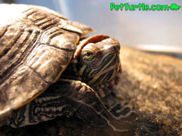

Turtles can make great pets if they are cared for properly. Too many people buy turtles for the novelty effect, and end up neglecting them. This is very sad because turtles are sophisticated creatures who have a potentially long lifespan, and could be in a family for generations.
Box turtles are land dwelling creatures with high, domed shells, hence the "box" moniker. Box turtles are found all over the world, and are generally found living in mossy areas of the forest, or other damp habitats. They are very territorial, and sometimes spend their entire lives near their place of birth. Box turtles are omnivorous, meaning they eat pretty much anything from berries to small insects. They are strong, sturdy animals, and usually grow to be about 6 inches long. Box turtles are usually dark in coloring with some yellowish markings, and the male of the species have bright red eyes, longer tails, and their plastrons are indented.
One thing to keep in mind is that slider turtles can grow up to 11 inches in length, so that small tank you bought along with your 4 inch turtle may not be adequate later on. Make sure you keep the water clean, as most turtles tend to foul it up pretty fast. Provide both space for swimming and a space for resting. The bottom of your tank should contain plenty of small rocks, so that your turtle can dig, as it is something they seem to enjoy doing. In addition to swimming and digging in rocks and mud, sliders love the warmth of the sun, and can lazily lay there for hours, before returning to the water for a swim. Sliders are also omnivorous, although they tend to eat less meat as they grow older. Captive sliders can be fed live goldfish, dried tubifex worm cubes and special food sticks. You can also feed your slider lettuce and other vegetables. Keep a close watch on your turtle's behavior, it should speak volumes about it's current state of health. A healthy slider will have alert eyes, and sharp coloring, whereas a sick one can be easily spotted by its lethargic behavior and dull looking skin color.
Mud turtles are small semi-terrestrial turtles, and make excellent pets. Like many other turtles, mud turtles are omnivorous, and prefer damp, sandy, or muddy dwellings as their name suggests. Common mud turtles rarely grow to sizes beyond 5 inches, and are therefore easy to keep indoors, or outdoors. Like most other turtles and reptiles, mud turtles love to bask in the sun's rays. Mud turtles are omnivorous, but in general they prefer to eat insects, tadpoles, and fish. Special turtle food will also do in captivity. As it is with other pet turtles, a large tank is recommended, and you must provide a sizeable dry land area so the turtle can rest, and enough clean (not muddy) water for it to be able to enjoy an refreshing swim.
Painted turtles are another species of small turtles found across North America. The painted turtles get their name from the colorful markings. The turtle's skin is usually dark olive green to black, with red and yellow stripes alongside the legs and neck. Painted turtles have elongated and smooth carapaces, with yellow plastrons, and can grow up to 10 inches long. The female of the species is usually bigger, but the male has a thicker tail, and long claws on it's front limbs. Painted turtles are also omnivorous, and can be given feeder fish, chicken meat, special food sticks, and lettuce as food.
Source: Pet Turtles